ロボットアーム入門
~ ハードウェアインテグレーション ~
大阪大学 中島優作
スライドの内容
- ロボットってどうやって設置するの？手先はどうやってつけるの？
- あまり学ぶ機会がないロボット分野のハードウェアの当たり前をまとめてあります
ロボットの設置
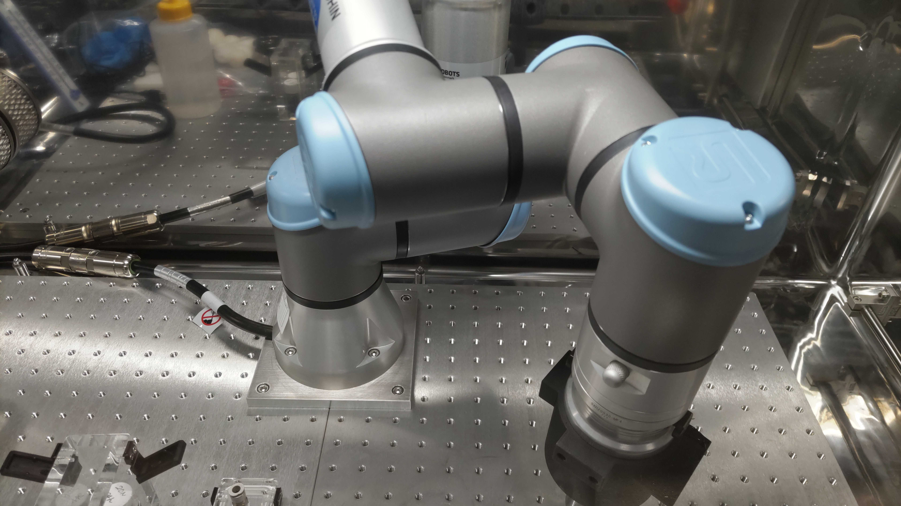
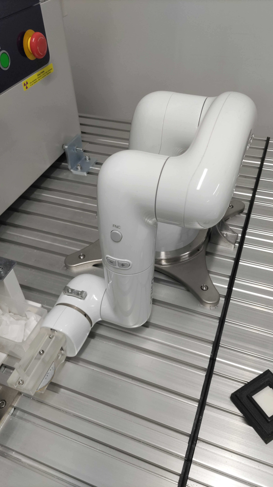
ロボットアームはアルミフレームや定盤に設置する場合がほとんど
アルミフレームの強度計算↓
アルミフレームの耐荷重
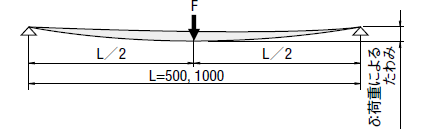
- アルミフレームはたわみやすく、ロボットの動作精度に影響する
- 重たいロボットや力のかかる作業をする際はきちんと計算してからフレーム選定が必要
- 長期の運用も見据えると剛性は余裕のある設計が安心
エンドエフェクタの取付
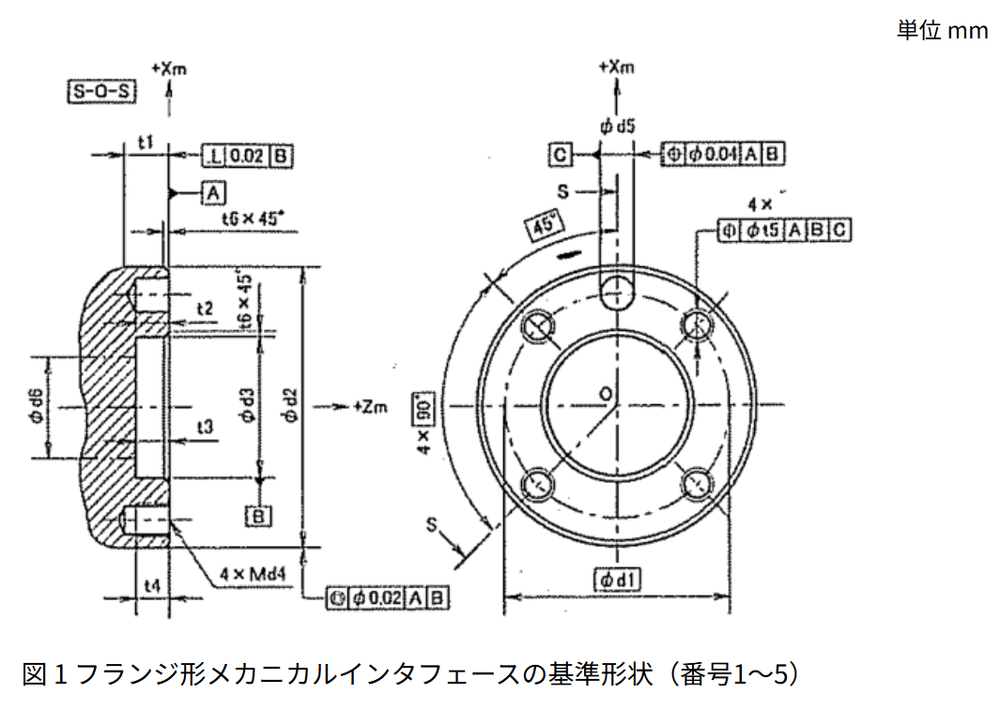
ロボットアームとPCの接続
→ 全画面表示
PCに付属のLANポートかUSB-LAN変換を使用して接続します
IPアドレスの仕組み↓
IPアドレスのセグメント
→ 全画面表示
- IPアドレスはネットワーク上の機器を識別するための番号
- サブネットマスクはIPアドレスのネットワーク部分とホスト部分を分けるためのもの
グリッパの接続方法
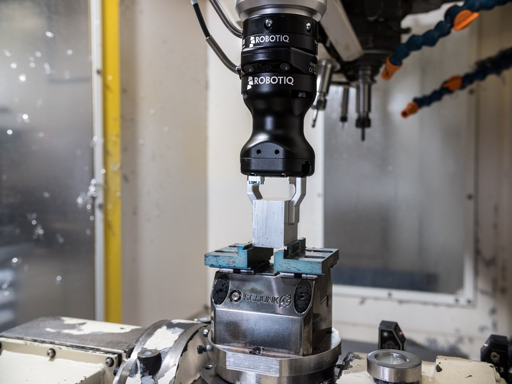
メーカー対応品以外は、自分で通信などを実装する必要があります
グリッパの配線
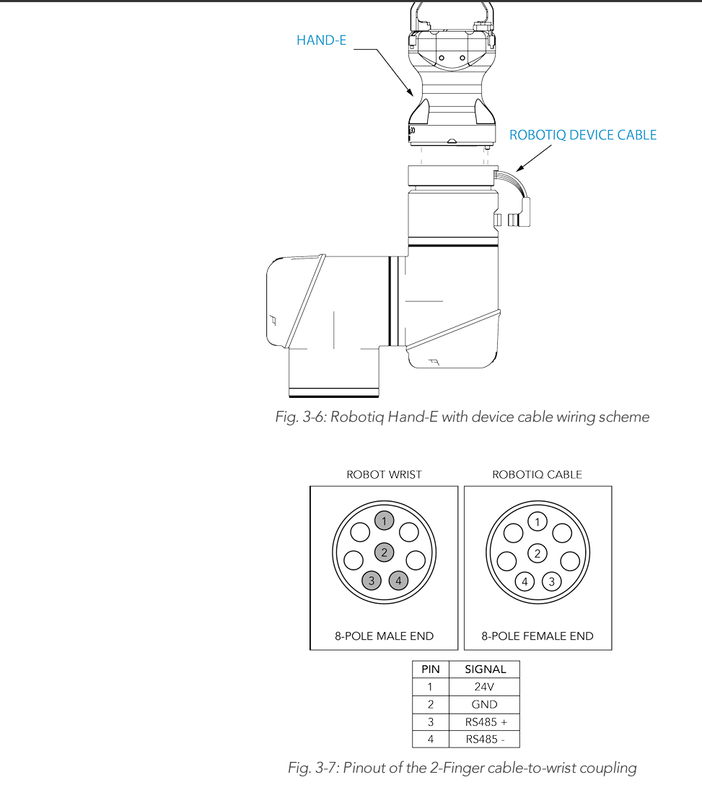
Robotiq Hand-E とユニバーサルロボットの接続例、ケーブル1本
最近は対応メーカ同士だとケーブル1本で接続できることが多いです
対応メーカでない場合は、電源と通信を個別に用意する必要があります
推奨電源↓ 通信方式→
電源の選定（誘導性負荷への対応）
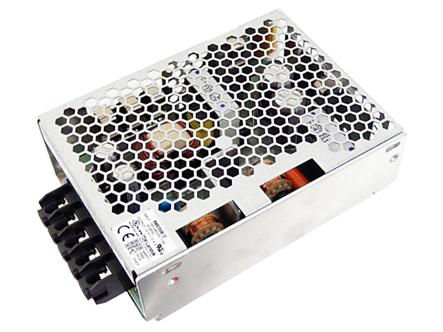
誘導性負荷対応
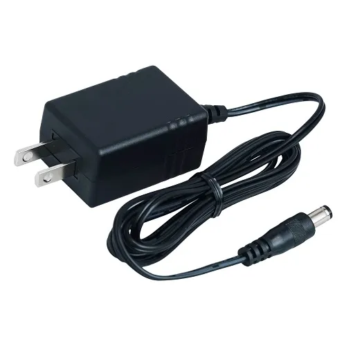
誘導性負荷非対応
モーターのような誘導性負荷を駆動する場合、対応した電源の選定が不可欠です
非対応の電源を使用すると、故障の原因となります
↓ACアダプタが故障する理由
誘導性負荷と電源
モーターはコイルでできているため、誘導性負荷となります。
電源をOFFにした際などに逆起電力というエネルギーの逆流が発生します。
誘導性負荷に対応していない電源（安価なACアダプタなど）は、この逆起電力に対する保護回路を持たないため、故障の原因となります。
外部機器との通信
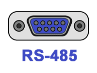
グリッパや外部機器との通信では、RS485という規格がよく使われます。
特に、多くの産業用ロボットやコンポーネントで採用されています。
RS485の基礎↓
データ通信の基本
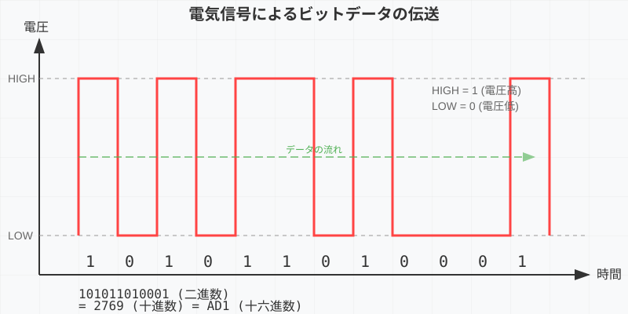
電気信号でHigh(1)とLow(0)の2値の情報(ビット)を送ります
文字はASCIIコードと呼ばれる表でビットを文字に変換します
RS485とは
→ 全画面表示
ビットのシンプルな通信について、基本的なプロトコルやコネクタの種類を決めたものがRS232
現在はノイズ体制などを高めた改良版にあたるRS485が主流
USB-RS485変換アダプタの選定↓
USB-RS485変換アダプタ
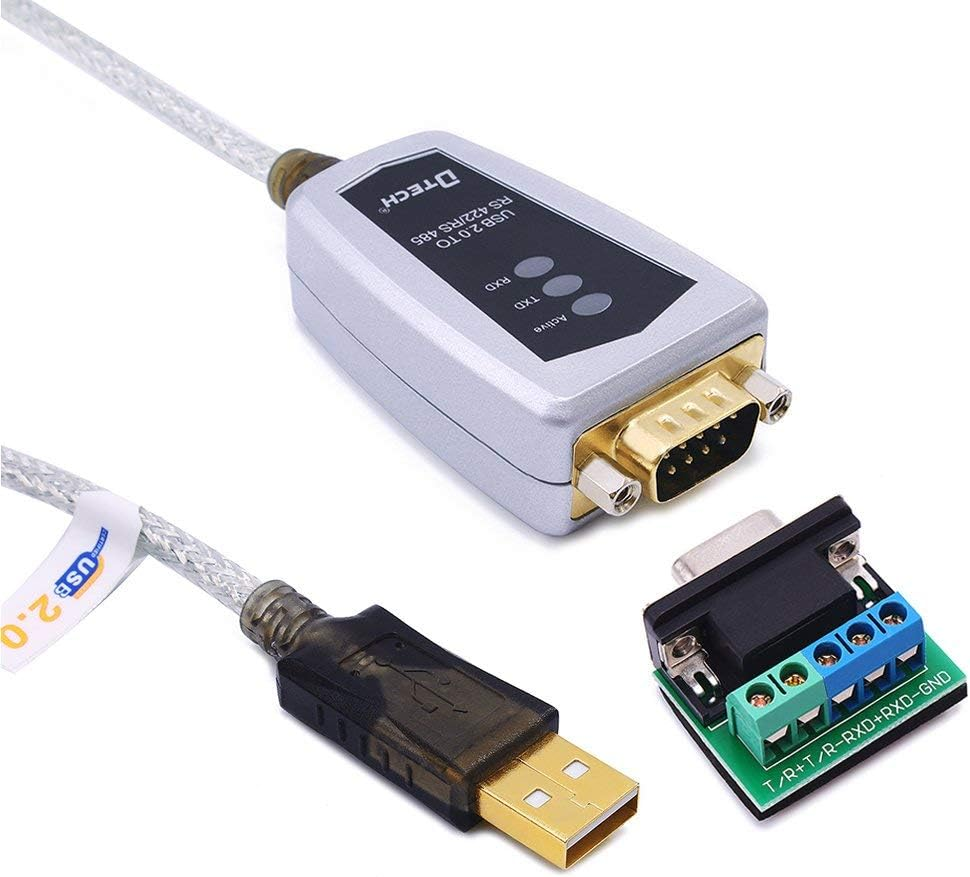
パソコンとの接続においては、USB-RS485変換アダプタを使用することが多い
←これなど、FTDI社のチップを使ったものがおススメです
非常停止スイッチの増設
→ 全画面表示
スイッチの接点構成は大抵のロボットだと2b接点を使用します
BOX入りスイッチ
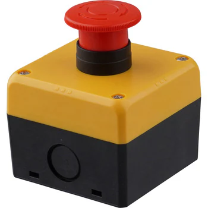
スイッチ単体でも売っていますが、BOXいりのスイッチを使用すると便利です
治具の作成
治具の作成、固定具を治具と言います
治具の設計
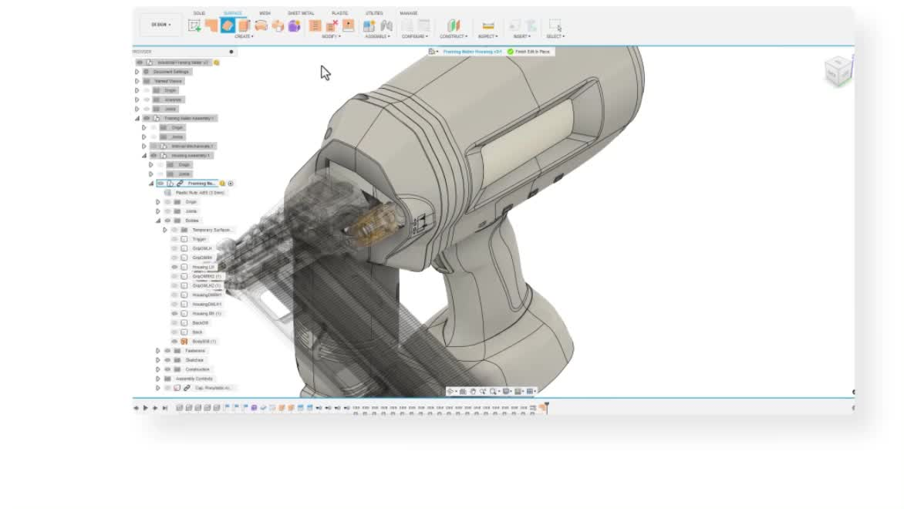
fusion360がCAD初心者に使いやすいです
治具の作成
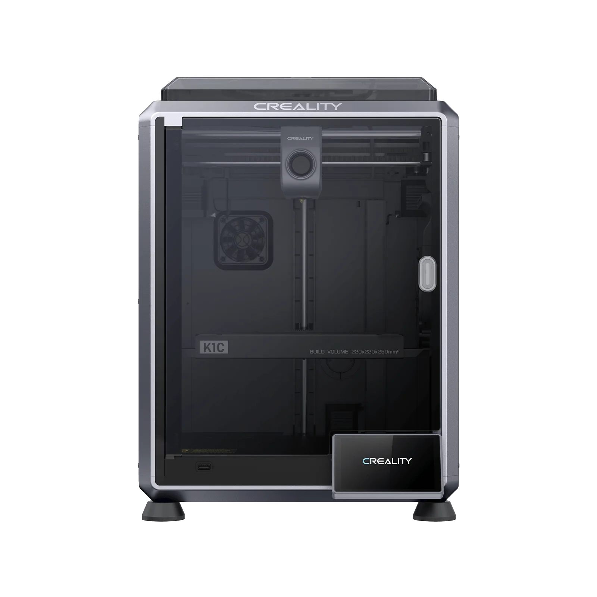
3Dプリンタで作成できます。何度も作り直すので印刷速度は重要です、2025年現時点だとcrealityK1cはおススメ
ロボットと他の機器の接続方法
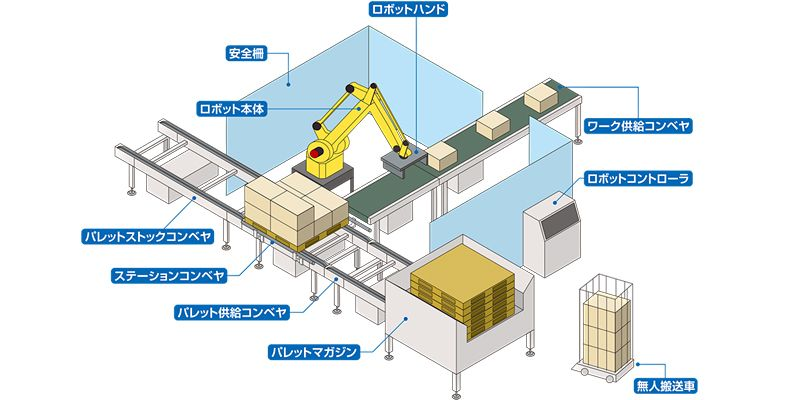
ロボット単体ではなく色々な装置をつなげる方法はいくつかあります
ロボットコントローラのIO
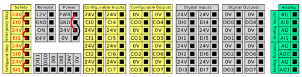
ロボットには基本的にIO(インプット/アウトプット)がついてきます
ON or OFFの信号で外部のモータを制御したり、センサからアナログ電圧を受け取ります
パソコン接続（USB等）

パソコンからロボットを制御する場合は、USBで他のセンサなどを接続して使うことも多いです
PLC接続

高信頼性などの産業用途ではPLCを使用し、FA用の通信を使うことが多いですが作るのは大変です
研究などのプロトタイピングの場合はUSBでも十分なことが多いです
便利なプロトタイピング用デバイスの紹介
M5stack
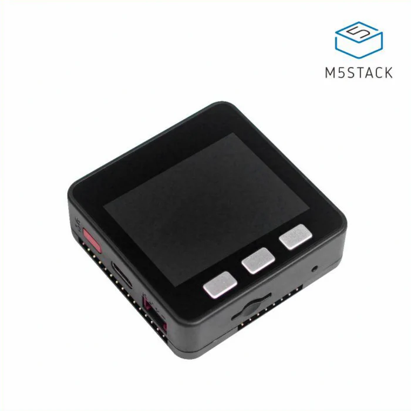
Arduinoのプログラムを書けるマイコンです、はんだ付け不要で様々なセンサを簡単に追加できます
Realsense
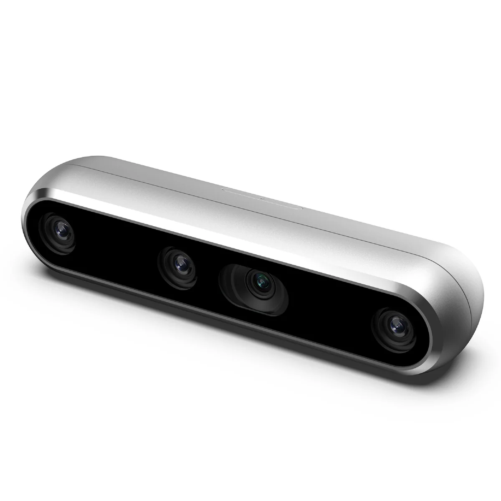
安価ですが高性能なIntel製の3Dカメラです、ロボットの周囲の環境を認識するために使用できます
Dynamixel
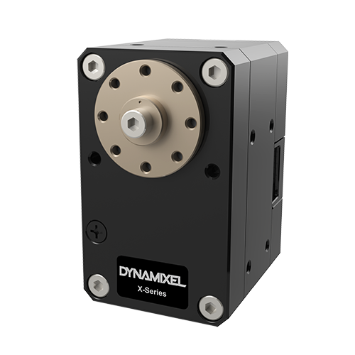
ロボットアームの関節等に使われるモータです、位置制御だけでなく電流制御(トルク制御)可能なため研究で重宝します